방울토마토 재배 AI — Phase 1 완료
물리 기반 모델(TOMGRO, Sonneveld & Voogt) · 머신러닝(XGBoost) · 데이터 기반 제어(DeePC) 를 통합한 수확량 예측·환경 처방 AI 시스템. 1작기 검증을 통해 예측 오차율 21.7% 달성 및 남은 오차 원인의 구조적 해결 경로 확보.
오차율: 예측값과 실제값의 상대적 차이를 % 로 표현한 지표 (학술명 MAPE) 예) 오차율 30% → 실제 수확량 100 kg 이면 예측은 70~130 kg 사이로 맞춤
에너지 배분 (건물 배분): 광합성으로 만든 에너지를 잎·줄기·열매에 각각 얼마나 나누는지
데이터 부족: 학습 샘플이 적어 모델이 안정적으로 일반화하지 못하는 상태 (학술명 과적합)
| 작기 기간 | 2025-07-09 ~ 2026-04-08 (40주, 약 9개월) |
| 면적 | 826.5 m² |
| 품종 | 토마지노 (방울토마토) |
| 정식 일자 | 2025-07-09 |
| 유효 비교 주차 | 28주 (TOMGRO·S&V 예측 + 8주 후 실측 > 0) |
| 총 실측 수확량 | 11.4 kg/m² (33주 합계) |
| 작기 구분 | 저온기 한겨울 (11월 중순) 고온기 초가을 (8월 중순) 저온기 초봄 (1월 초) |
| 주요 타겟 |
대규모 스마트팜 자체 운영 (대농 규모 · 인력 기반 품질 관리 한계) 청년농·기업농 진입자 (진입 장벽 낮추기 · 경험 부족 보완) |
| 비(非) 타겟 | 연차 쌓인 기존 재배사 (자기 노하우·경험 확립 → AI 의존도 낮음) |
| 왜 AI 인가 |
일정 규모 이상에서는 인력만으로 품질 관리 불가능 → AI 기반 자동화로 재배 의사결정 지원 필수 |
| 기술 방향 |
물리 모델 + 머신러닝 + 데이터 제어 하이브리드 구조 해석 가능성 유지 (재배사와 대화 가능) + 오차 구조 투명 공개 |
현재 온실 상황 → AI 예측 → 재배사 판단 (분기점) → 목표 입력 → 역산 → 설비 제어 의 7단계 흐름 예측은 AI 가, 의사결정은 재배사가, 설비 조정은 DeePC 가 담당하는 사람-AI 협업 구조
· 온도 / CO₂ / 광량 / EC / 습도 (5분 단위)
· LAI / 엽수 / 엽장·엽폭 (주간)
· 적엽 / 적과 기록 (FarmWork)
예측 수확량: 0.725 kg/m² (8주 뒤)
├─ TOMGRO 단독: 0.402 kg (이론 상한)
├─ + S&V (EC 보정): 0.214 kg
└─ + XGBoost 보정: 0.725 kg (최종 예측)
"AI 예측 0.725 kg 충분한가?"
목표 0.9 kg 달성하려면?
→ 과실 건물 63.0 g DM 필요
→ 주간 총광합성 187 g CH₂O 필요
→ 평균 DLI 25 mol/m²/day 필요
최적 환경 조건:
· 기온 23°C (주간)
· CO₂ 800 ppm
· LAI 3.5 이상 유지
"환경 23°C · 800 ppm 만들려면
설비는 어떻게 조정?"
제어 처방:
· 천창 개도 15%
· 에너지 스크린 70% 닫기
· 난방 파이프 45°C
· CO₂ 공급 +200 ppm
→ 환경 변화 → 생육 반응 → 8주 뒤 실제 수확
→ XGBoost 재학습, 오차율 감소
→ 다음 작기 예측 정확도 개선
의사결정 (STEP 3) 은 재배사가, 계산·역산·처방 (STEP 2·4·5) 은 AI 가 담당함 재배사는 AI 예측을 참고하여 현실적 목표 설정 을 하고, AI 는 그 목표 달성을 위한 환경·설비 설정값 을 제시함
Phase 1 구현: STEP 1·2·5·6 · Phase 2 구현 예정: STEP 3 UI·STEP 4 역산·STEP 7 자동 재학습
Phase 1.5 오차율 21.7% 를 달성함과 동시에, 남은 오차의 구조를 5가지 원인으로 분해하고 각 원인마다 해결 경로를 확보함 Phase 2 목표 오차율 13~17% 는 구조적으로 계산된 예상이며, 단순 희망이 아님
4개 모델 기술 문서
각 모델의 수식 · 파라미터 · 검증 결과를 상세히 기술한 개별 문서. 물리 모델(TOMGRO, S&V) · 머신러닝(XGBoost) · 제어(DeePC).
물리 모델 (TOMGRO, S&V) 이 기본 예측, ML (XGBoost) 이 잔차 보정, 제어 (DeePC) 가 환경 처방을 담당. 각 모델의 한계는 문서별로 투명 공개함
TOMGRO — 광합성·건물 생산 모델
1991년 미국 Florida 대학교 Jones 교수팀이 개발한 토마토 생육-수확 시뮬레이션 모델. 네덜란드 Wageningen 대학의 Heuvelink (1996) 가 개선하여 현재 온실 농업 연구의 표준이 됨 본 프로젝트에서는 핵심 모듈인 광합성 계산부를 구현하여 1작기 실측 데이터에 적용함
Input / Output 구조
TOMGRO 광합성 함수는 4개 입력 → 1개 출력 구조. 모든 입력은 1시간 대표값이며, 원본 데이터를 전처리하여 생성함
| 변수 | 단위 | 원본 데이터 | 전처리 | 저온기 한겨울 값 |
|---|---|---|---|---|
| PAR | μmol/m²/s | radiation (W/m²) | × 2.02 변환 | 1404.37 (11/10 12:00) |
| CO2 | ppm | meas CO2 conc | 5분 → 1시간 평균 | 431.27 |
| T_air | °C | meas grh temp | 5분 → 1시간 평균 | 26.00 |
| LAI | m² leaf / m² ground | 엽장·엽폭·엽수 (주간 측정) | 별도 공식 계산 | 3.027 |
| 변수 | 단위 | 의미 | 저온기 한겨울 값 |
|---|---|---|---|
| 주간 총광합성 | g CH₂O/m²/week | 캐노피 7일 누적 탄소 고정량 | 87.41 |
| 주간 유지호흡 | g CH₂O/m²/week | 기존 조직 유지 비용 | ~20 |
| 순 건물 생산 | g DM/m²/week | 성장호흡 25% 차감 후 | 44.70 |
| 과실 건물 | g DM/m²/week | 63% 배분 (DAP 126 기준) | 28.13 |
| 예측 수확량 | kg/m²/week | 최종 예측값 (과실 신선무게) | 0.402 |
모델 구조 — 3단계 광합성 계산
TOMGRO 는 Lambert-Beer 빛 분포 → 잎 단위 광합성 (Farquhar 간소화) → 캐노피 전체 적분의 3단계 구조로 이론 건물 생산량을 계산함
LAI 계산 방법 (Heuvelink 1995)
TOMGRO 의 핵심 입력 변수 LAI 는 원본 PRIVA 데이터에 없으므로 주간 생육 측정값에서 계산함
Heuvelink (1995) 논문은 일반 대형 토마토 기준으로 0.7 을 제시하나, 본 농장 토마지노 품종 (방울토마토 계열) 은 잎 형상이 다름 재배사 실측 결과 잎 크기 대비 실제 엽면적 비율이 0.4~0.5 수준으로 확인됨 따라서 본 프로젝트는 SHAPE = 0.5 를 사용함 (방울토마토 실측 근거)
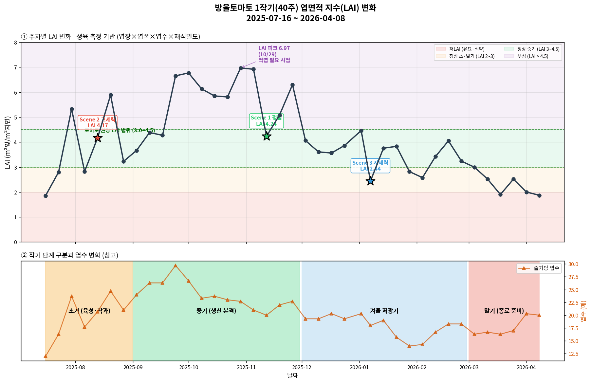
※ 이미지는 SHAPE 0.7 기준으로 생성되었으므로 표시 값을 × 0.714 로 환산하여 해석 필요 (Phase 2 재생성 예정)
저온기 한겨울 주간 실행 결과
2025-11-06 ~ 11-12, DAP 120~126일 구간. 7일간 환경 변화를 5분 간격으로 추적하여 주간 누적 광합성과 기관별 에너지 배분 (건물 배분) 을 계산함
| 날짜 | 요일 | 내부 DLI (mol/m²) | 평균 기온 | 순 건물 (g DM/m²) |
|---|---|---|---|---|
| 11-06 | 목 | 13.99 | 21.42 °C | 8.31 |
| 11-07 | 금 | 11.13 | 21.45 °C | 6.65 |
| 11-08 | 토 | 5.10 | 20.65 °C | 2.44 |
| 11-09 | 일 | 10.58 | 20.75 °C | 5.99 |
| 11-10 | 월 | 15.64 | 20.86 °C | 9.34 |
| 11-11 | 화 | 14.77 | 21.43 °C | 8.78 |
| 11-12 | 수 | 5.84 | 20.37 °C | 3.19 |
| 주간 합계 | — | 누적 77.04 | — | 44.70 |
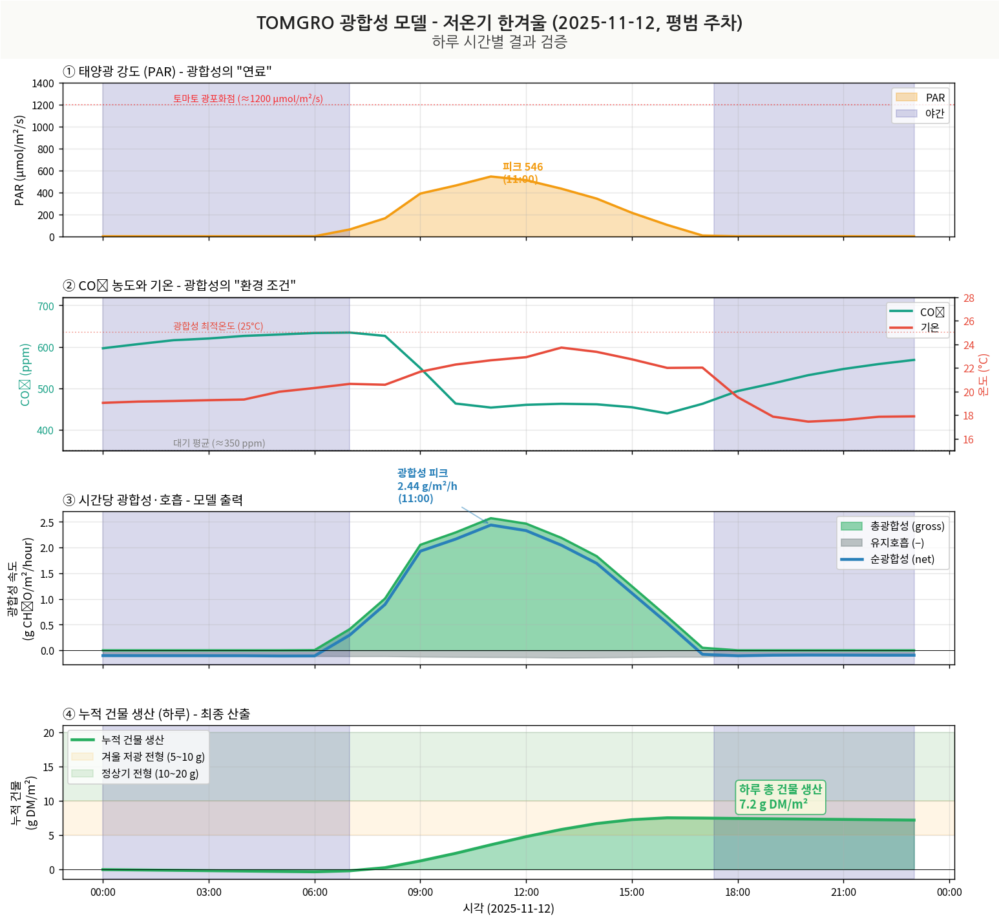
📊 값 구분 안내 — PAR · CO₂ · 기온 = 실측값 (PRIVA 센서 기록) · 광합성량 · 호흡량 · 건물 생산 = 계산값 (TOMGRO 수식으로 산출) 예측이 아니라 실측 환경에서 TOMGRO 수식을 적용한 결과
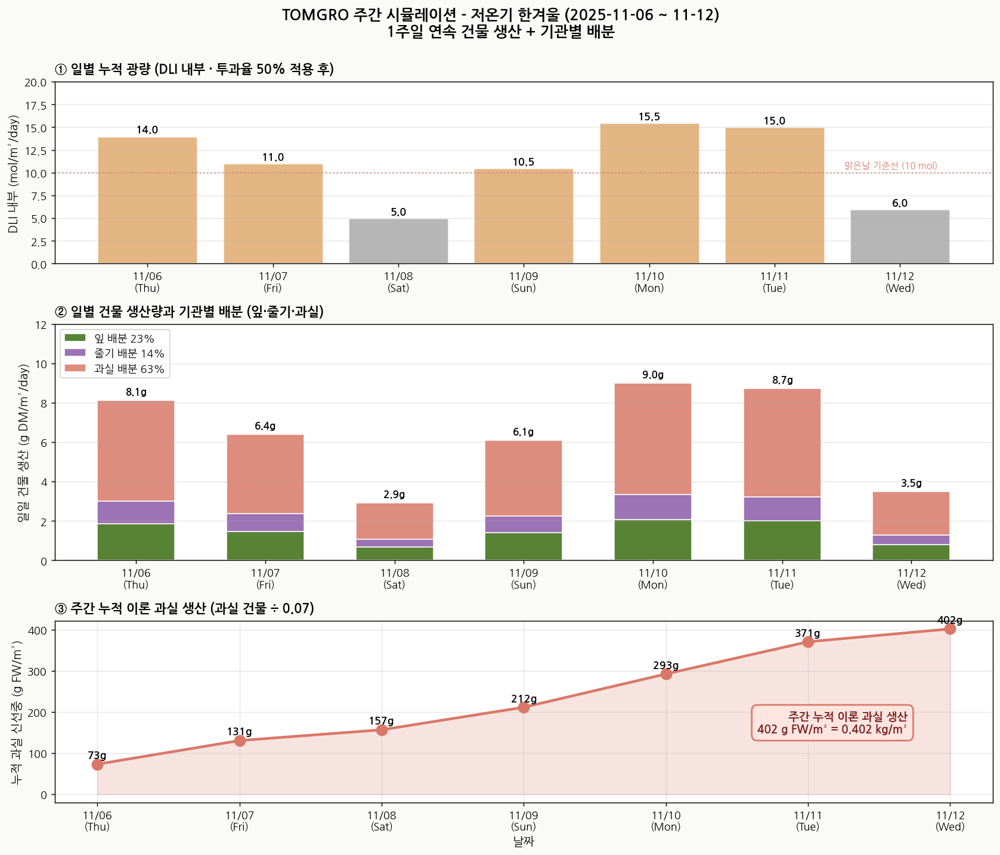
📊 값 구분 안내 — DLI = 실측 광량 적분 · 건물 생산량·배분 = TOMGRO 계산값 최종 수확량 (0.402 kg) 은 8주 뒤 실제 수확 예측값
최종 예측값 계산 (저온기 한겨울)
PDF 문서 섹션 4.5 에는 유지호흡을 식물 건물량 250 g/m² 기준 단순화한 수기 예시가 있으나, 실제 시뮬레이션은 시간별·기온별 유지호흡을 정밀 계산하여 0.402 kg/m² 산출 프로젝트 전반 (통합검증·시각화) 에 사용된 값은 0.402 kg/m² 기준임
실측 비교와 오차율 해석
환경 기준
8주 뒤 수확
(절대오차 ÷ 실측)
| 기간 | 수확 일자 | 수확량 (동 전체) | 환산 |
|---|---|---|---|
| 2026-01-01 ~ 01-07 | 01-02 | 169.9 kg | 826.5 m² 로 나눔 |
| 01-05 | 155.1 kg | ||
| 합계 | 325.0 kg | ||
| → 실제 수확량 | 0.393 kg/m²/week | ||
방울토마토는 개화 → 수정·착과 → 과실 비대 → 착색·성숙 전 과정이 약 8주 소요. 따라서 11월 첫째 주 광합성 기반 예측은 8주 뒤 (2026-01 첫째 주) 수확과 비교함
오차율 2.2% 의 해석 (저온기 한겨울, TOMGRO 단독)
저온기 한겨울 주차의 TOMGRO 예측 수확량 0.402 kg/m² 이 실측 0.393 kg/m² 과 매우 근접함 이는 내부 광량과 본 농장 SHAPE 0.5 기준으로 광합성·건물 분배 수식이 저온기·안정 생장기 조건에서 정확히 작동함을 의미
단, 전 작기 평균 오차율은 25.6% 로 주차별 편차 존재 → S&V 와 XGBoost 단계를 거쳐 최종 21.7% 달성
| 누락 요소 | 예상 영향 | 담당 모델 |
|---|---|---|
| 근권 EC 스트레스 | −10~20% | Sonneveld & Voogt |
| 솎기 (적과) | −1~3% | 농작업 부록 |
| 폐기과·크기 미달 | −10~20% | XGBoost 잔차 학습 |
| 잎 노화 손실 | −5% | 주기별 배분 조정 |
| 재배사 의사결정 | ±10% | 학습 어려움 |
외부 vs 내부 광량 검증
현재 TOMGRO 에 입력되는 PAR 은 PRIVA 의 외부 일사 센서 값을 × 2.02 변환한 것 하지만 실제 작물이 받는 빛은 유리·3중 스크린·구조물을 통과한 내부 광량임 본 프로젝트는 별도의 내부 광 센서 (M102N1R6.1V2) 데이터를 확보하여 두 값을 비교 분석함
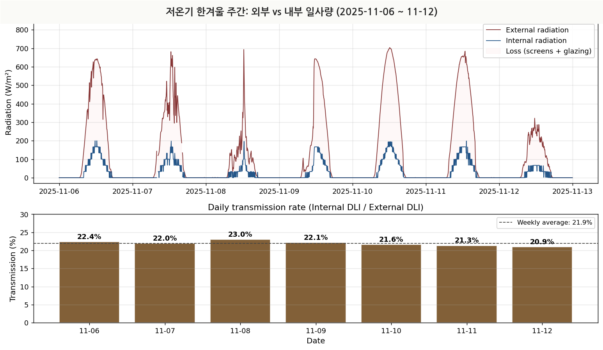
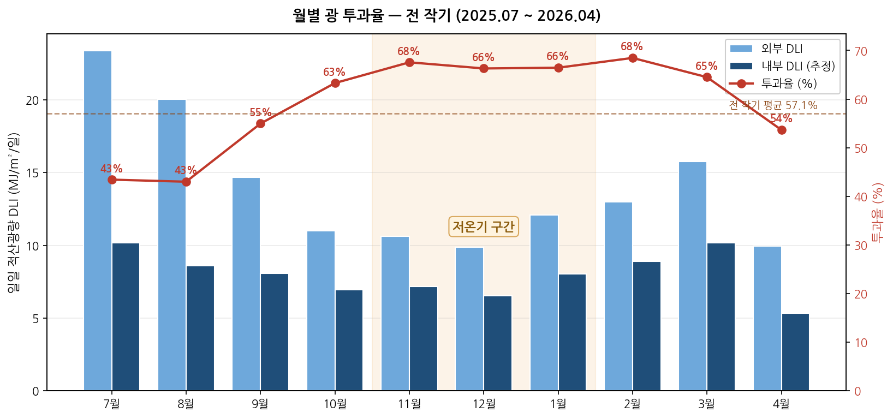
| 광량 입력 가정 | TOMGRO 단독 오차율 | 전 작기 예측 누적 | 실측 대비 |
|---|---|---|---|
| 외부 광량 그대로 사용 | 86.0% | 25.1 kg/m² | +121% 과대 |
| 내부 센서 그대로 사용 | 64.0% | 6.3 kg/m² | −45% 과소 |
| 투과율 50% 적용 (Phase 1.5 기준) | 25.6% | 9.6 kg/m² | −10% 근접 |
| 실측 (참고) | — | 11.4 kg/m² | — |
외부 광량·내부 센서 단독 사용은 모두 큰 오차 발생. 데이터 탐색 결과 투과율 50% 가 실측과 가장 근접 본 농장은 3중 스크린 + 유리/필름 구조이므로 외부 광량의 약 절반이 캐노피에 도달하는 것이 합리적
외부 광량과 내부 광량의 차이가 약 78% (투과율 22%) 로 매우 큼 본 Phase 1 에서는 데이터 최적화로 투과율 50% 가 적합함을 찾았으나, 이는 실측값이 아닌 추정값임
Phase 2 필수 작업:
· 캐노피 상단 레벨에 PAR 센서 (μmol/m²/s 직접 측정) 추가 설치 필요
· 스크린 구간별로 센서 배치하여 투과율 공간 분포 파악
· 동적 투과율 모델 구축 (스크린 개도 · 시간 · 태양 고도에 따른 변동)
파라미터 조정 이력
원본 수식·파라미터는 전혀 건드리지 않음. 다만 본 농장 특성에 맞춰 1가지 환산 계수만 조정:
일반 대형 토마토 0.06 (6%) → 방울토마토 0.07 (7%) (Adams 1990, Wu & Kubota 2008). 방울토마토는 당도가 높아 건물 함량이 큼. 이로 인해 같은 건물에서 환산된 수확량이 일반 토마토 기준보다 약 14% 적게 나옴 (더 보수적).
Sonneveld & Voogt — EC 스트레스 수량 감소
네덜란드 Wageningen 대학과 IMAG 의 공동 연구로 1980년대부터 축적된 근권 EC 스트레스에 의한 작물 수량 감소 정량화 모델. Sonneveld & Voogt (2009) 가 종합 정리하여 현재 FAO 의 온실 작물 염류 스트레스 평가 국제 표준. 본 농장처럼 고당도 재배 전략을 쓰는 곳은 EC 를 의도적으로 높게 운영하므로 S&V 손실 평가가 특히 중요함
Input / Output 구조
S&V 는 가장 단순한 구조 — 1개 입력 → 1개 출력. 슬라브 EC 값만으로 상대 수량을 계산함
| 변수 | 단위 | 원본 데이터 | 전처리 | 저온기 한겨울 값 |
|---|---|---|---|---|
| 슬라브 EC | dS/m | 슬라브 EC (mS/cm) | 주간 평균 | 5.56 |
| 변수 | 단위 | 의미 | 저온기 한겨울 값 |
|---|---|---|---|
| 상대 수량 Y_r | 비율 (0~1) | TOMGRO 예측에 곱할 계수 (1 = 손실 없음) | 0.860 |
| 손실률 | % | 1 − Y_r | 14.0% |
| TOMGRO × S&V | kg/m²/week | 0.402 × 0.533 | 0.214 |
본 농장은 공급 EC (2.84) · 배액 EC (6.83) 도 측정하지만, 식물이 실제 흡수하는 슬라브 EC (5.56) 만 입력으로 사용함 FAO 표준 및 Sonneveld & Voogt (2009) 준수.
모델 구조 — 선형 EC 손실 수식
Maas & Hoffman (1977) 의 고전 선형 모델을 방울토마토에 맞춰 적용. 슬라브 EC 가 임계값을 넘으면 초과량에 비례해 수량이 선형적으로 감소함
세 가지 EC 중 슬라브 EC 선택 이유
본 농장에는 EC 측정 지점이 3곳 있으나, 식물이 실제 흡수하는 근권 EC 를 사용함
| EC 종류 | 측정 위치 | 저온기 한겨울 평균 | 역할 |
|---|---|---|---|
| 공급 EC | 양액기 공급 라인 | 2.84 dS/m | 시설이 본 값 |
| 슬라브 EC | 근권 (슬라브 내부) | 5.56 dS/m | S&V 입력 |
| 배액 EC | 배액 라인 | 6.83 dS/m | 뿌리 통과 후 농축 |
온실 재배에서 식물은 물만 선택적으로 흡수하고 염류는 남기므로, 공급 → 슬라브 → 배액 순서로 EC 가 농축됨 본 농장의 2.84 → 5.56 → 6.83 dS/m 패턴은 정상 관수·배액 시스템의 전형적 모습임
저온기 한겨울 주간 EC 변화
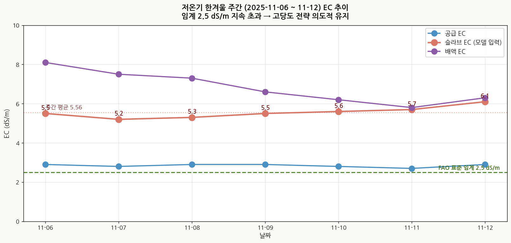
S&V 손실 곡선
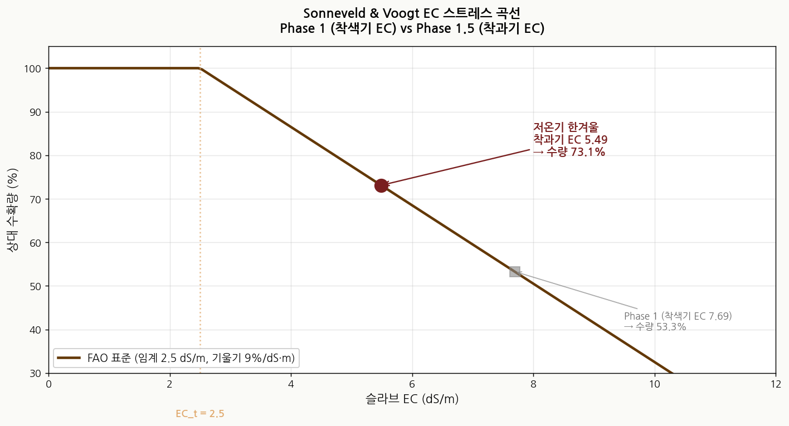
월별 EC 손실 패턴
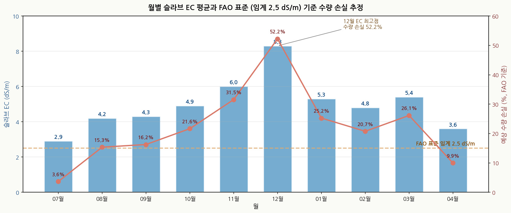
결과 해석
| 체인 단계 | 저온기 한겨울 예측 | 누적 오차율 | 이전 대비 |
|---|---|---|---|
| TOMGRO 단독 | 0.402 kg/m² | 25.6% | — |
| + S&V 적용 | 0.293 kg/m² | 34.1% | +8.5%p ⚠️ |
| + XGBoost CV | 0.378 kg/m² | 21.7% | −12.4%p ✓ |
재배사 피드백에서 출발한 EC 심층 분석 결과, 본 농장 방울토마토는 수확 7주 전 (착과기) EC 가 과실 크기를 결정함이 데이터로 확인됨
Phase 1 → Phase 1.5 변경
· 기존 (Phase 1): 수확 1주 전 EC (착색기) — WMAPE 25.2%
· 현재 (Phase 1.5): 수확 7주 전 EC (착과기) — WMAPE 21.7%
· 개선 폭: −3.5%p
생리학적 의미
· 착과기 (수확 7주 전): 세포 분열 단계 → 과실 크기 결정 (수확량)
· 과실 비대기 (수확 2~5주 전): 이미 정해진 세포 수로 비대
· 착색기 (수확 1주 전): 당도 집적 (품질, Phase 2 브릭스 예측 대상)
TOMGRO 단독 25.6% → + S&V 34.1% (+8.5%p 악화)
이는 저온기 한겨울 사례가 보여주듯 본 농장 특수성:
· 저온기 한겨울 TOMGRO 단독 예측 0.402 kg → 실측 0.393 kg 과 거의 일치
· 여기에 S&V (착과기 EC 5.49, yield 0.731) 곱하면 0.293 kg 로 과소 예측
· 이후 XGBoost 가 잔차 학습으로 0.378 kg 까지 복구
Phase 2 에서 TOMGRO 이상 LAI 추정 + S&V 수분·건물 분리 모델 로 구조적 개선 예정
XGBoost — 잔차 학습 보정
Chen & Guestrin (2016) 의 Gradient Boosting 기반 결정 트리 앙상블. 본 프로젝트에서는 TOMGRO·S&V 물리 모델이 놓친 잔차를 학습하여 최종 수확량 예측을 보정함 36개 특성을 기반으로 하며 데이터 부족에 따른 학습 한계를 함께 공개
Input / Output 구조
XGBoost 는 36개 입력 특성 → 1개 출력 (8주 후 실측 수확량). 환경 · 생육 · EC · 물리 모델 출력 · 시간 · Lag 등 다양한 소스 통합.
| 카테고리 | 개수 | 특성 목록 |
|---|---|---|
| 환경 | 9 | temp_mean, temp_day, temp_night, DIF, CO2_day, DLI, VPD, outside_temp, rad_max |
| 생육 | 5 | LAI, stem_thick, leaf_length, leaf_width, n_leaves |
| 화방·과실 | 5 | flowering, fruit_set, harvested_c, total_fruits, stem_growth |
| EC | 3 | slab_ec_mean, slab_ec_max, slab_ec_std |
| TOMGRO 출력 | 4 | tomgro_DM, tomgro_fruit_DM, tomgro_fruit_FW, tomgro_DLI |
| S&V 출력 | 2 | sv_relative_yield, sv_loss_pct |
| 시간 | 1 | DAP (정식 후 경과일) |
| Lag 특성 | 7 | DLI_lag1/4, tomgro_fruit_DM_lag1/4, slab_ec_mean_lag1/4, LAI_lag1/4 |
| 합계 | 36 | 주간 단위 집계 |
방울토마토는 꽃이 피고 수확까지 약 8주 소요. "이번 주 환경 → 다음 주 수확" 이 아니라 "몇 주 전 환경 → 이번 주 수확" 의 시차 구조를 반영하기 위해 1주·4주 전 값을 포함
| 변수 | 단위 | 의미 | 시차 |
|---|---|---|---|
| target_yield | kg/m²/week | W+8주 실측 수확량 | +8주 시차 |
모델 구조와 특성
교차 검증 결과 (TimeSeriesSplit 5-fold)
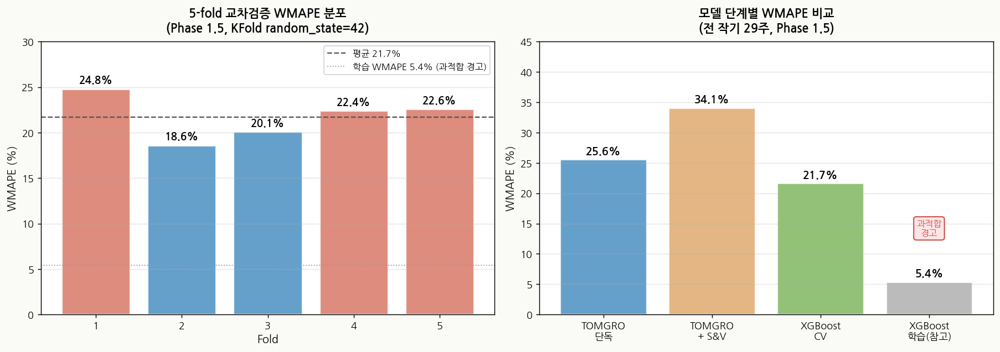
학습 오차율 5.4% vs CV 오차율 23.6% 차이는 18.2%p. 이는 모델이 학습 데이터의 노이즈까지 기억했을 가능성. Fold별 편차 6.6~54.9% 범위도 시기별로 일반화 성능이 크게 다름을 시사.
예측 vs 실제
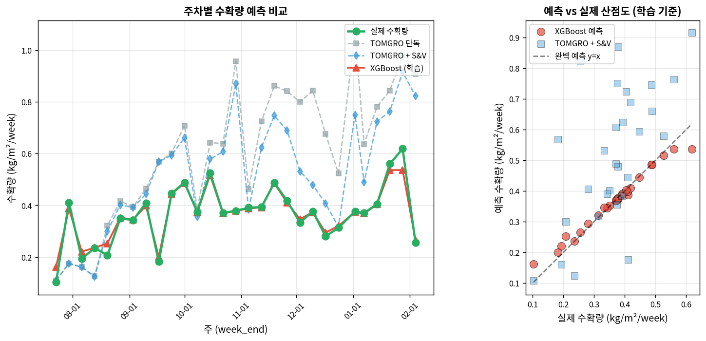
특성 중요도 Top 10
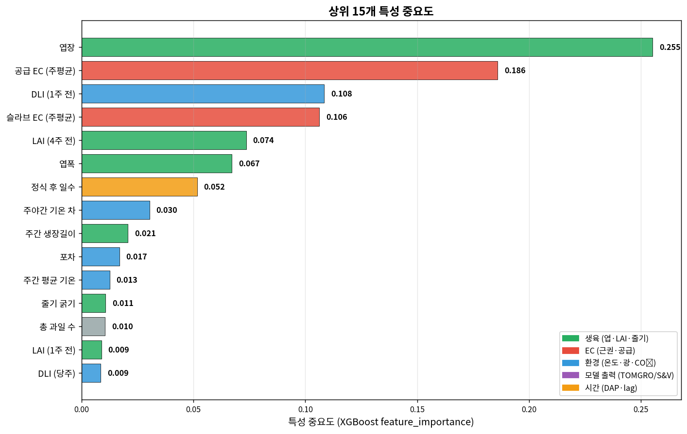
이 그래프는 XGBoost 가 수확량 예측에 각 변수를 얼마나 활용했는가 를 보여줌 "잔차를 얼마나 기여했는가" 가 아님 수확량 전체 예측 에서의 변수별 기여도
예) LAI 가 상위에 나오는 이유: TOMGRO 가 이미 LAI 를 광합성 계산에 반영했지만, XGBoost 는 LAI 값 자체도 추가 입력으로 받아 "LAI 4 인 주차는 수확량 높음" 같은 별도 패턴까지 학습함
→ 물리 모델 계산 + ML 패턴 학습의 이중 활용 구조
한계와 개선 방향
| 한계 | 원인 | 개선 방향 |
|---|---|---|
| 데이터 부족 (과적합 경향) | 학습 데이터 29주만 · 극단값 풍부도 낮음 | 2~3작기 누적 후 재학습 |
| Fold별 편차 큼 | 초기 정식기 · 환절기 샘플 부족 | 계절별 균등 샘플링 |
| 예측 가능 범위 제한 | 학습 데이터 밖 시기 (2026-03~04) 예측 불가 | 다작기 학습 범위 확장 |
| 방향 일치율 낮음 | 잔차 학습 특성상 추세 포착 약함 | 물리 모델과 앙상블 유지 |
학습 오차율 5.4% 를 그대로 실무에 적용 금지. CV 오차율 23.6% (±20.1) 가 현실적 기대치이며, 특성 중요도 분석을 통한 인사이트 도출에 주로 활용. Phase 2 에서 2작기 데이터로 재학습 후 재평가 예정.
DeePC — 데이터 기반 예측 제어
Coulson et al. (2019) 의 Data-enabled Predictive Control. Willems' Fundamental Lemma 와 Hankel matrix 를 이용해 시스템 모델 없이 과거 데이터만으로 최적 제어 액션을 처방. 본 프로젝트에서는 v7 파일럿 → v8 본 농장 튜닝을 거쳐 3중 스크린 · 환기 급변 제약 등을 반영하고, 시간 패턴 학습 한계를 정직하게 공개.
Input / Output 구조
DeePC 는 앞 3개 모델과 다른 구조 변수를 제어(u) · 외란(w) · 출력(y) 3종으로 구분하며, 과거 궤적 데이터에서 Hankel matrix 를 구성해 미래 최적 제어 액션을 처방함
DeePC 는 단독으로 작동하지 않음 아래 3단계 흐름으로 TOMGRO 와 연결됨
① 목표 설정 (재배사 / TOMGRO)
· 재배사가 "주당 0.7 kg/m² 수확량 달성"을 목표로 설정
· TOMGRO 가 현재 환경 (광·CO₂·온도·LAI) 으로 "이론 최대 0.402 kg/m² 가능" 계산
· 달성을 위한 최적 환경 조건 (예: 기온 23°C, CO₂ 800 ppm) 역산
② 환경 목표 전달 (TOMGRO → DeePC)
· TOMGRO 의 역산 결과 (최적 기온·CO₂·습도 목표치) 를 DeePC 에 전달
③ 제어 변수 처방 (DeePC)
· DeePC 가 "그 환경을 만들려면 창문 몇 % · 스크린 몇 % · 난방 몇 °C 가 필요한가?" 역산
· 재배사가 이 값으로 설비 조정 (또는 PRIVA 연동 자동 제어)
⚠️ 현재 한계: ①번 역산 로직 (목표 수확량 → 최적 환경) 미구현 상태 현재는 DeePC 가 과거 데이터 기반으로 "그 시점에 최적이었을 환경" 을 역산만 하며, "재배사가 원하는 목표 수확량" 입력은 Phase 2 에서 추가 예정
재배사가 조정할 수 있는 변수. DeePC 가 매 스텝마다 최적값을 처방.
| 변수 | 의미 | 단위 | v7 | v8 |
|---|---|---|---|---|
| meas_lee | lee side 천창 개도 | % | ✅ | ✅ |
| meas_wind | wind side 천창 개도 | % | ✅ | ✅ |
| meas_curtain_1 | 스크린 1 (에너지, 70% 차광 · 83% 보온) | % | ✅ | ✅ |
| meas_curtain_2 | 스크린 2 (차광 50% · 보온 50%) | % | ❌ | ✅ 신규 |
| meas_curtain_3 | 스크린 3 (차광 30%) | % | ❌ | ✅ 신규 |
| meas_wt_1 | 난방 파이프 온도 | °C | ✅ | ✅ |
제어 불가능. 예보·관측으로 알려져 있지만 조정 불가.
| 변수 | 의미 | 단위 | 데이터 소스 |
|---|---|---|---|
| outside_temp | 외기 기온 | °C | PRIVA 외기 센서 |
| radiation | 외부 일사 | W/m² | PRIVA 일사계 |
| LAI | 엽면적 지수 | m²/m² | 주간 측정 → 일별 보간 |
DeePC 가 참조 궤적에 맞춰 유지하려는 변수. 주 목표는 내부 기온.
| 변수 | 의미 | 단위 | 역할 |
|---|---|---|---|
| meas_grh_temp | 내부 기온 | °C | 주 최적화 대상 (참조 궤적 ± 1°C 밴드) |
| meas_CO2_conc | 내부 CO₂ | ppm | 부 최적화 (450~800 ppm 제약) |
| meas_RH | 내부 상대습도 | % | 관찰 (제약 없음) |
v7 은 3중 스크린을 "스크린 1 하나만" 으로 단순화하여 에너지 스크린과 차광 스크린의 역할 차이를 무시. v8 은 3개 스크린을 각각 별도 제어 변수로 모델링 (커튼 2, 3 신규 추가).
DeePC 기본 개념
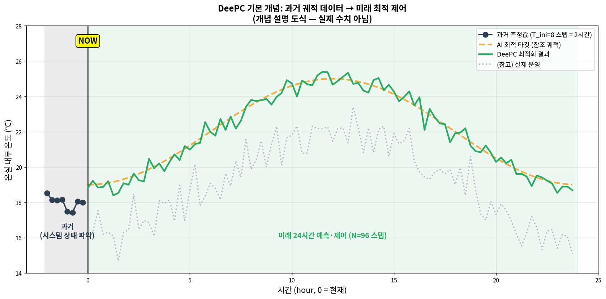
v7 파일럿 → v8 본 농장 튜닝
v7 은 파일럿 버전으로 5가지 문제점이 있었음 v8 은 본 농장 데이터 특성에 맞춰 6가지 개선 작업 수행.
| 영역 | v7 (파일럿) | v8 (본 농장 튜닝) |
|---|---|---|
| 스크린 모델 | 단일 스크린 | 3중 스크린 분리 모델링 |
| 커튼 제어 | 연속 값 | 10% 단위 이산화 (0, 10, 20…) |
| 환기 급변 | 제약 없음 | ±5%/15분 제약 |
| 학습 궤적 | 1,000 샘플 | 3,000 샘플 |
| 용어 | 리워드 쪽 | lee / wind side |
| 난방 편차 | 과소 모델링 | 실제 편차 반영 시도 |
제어 전략 종합 (v7 vs v8 vs 실제)
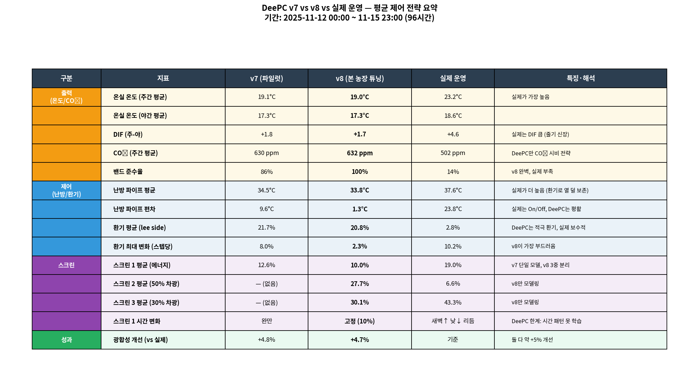
v7 vs v8 vs 실제 시계열 비교
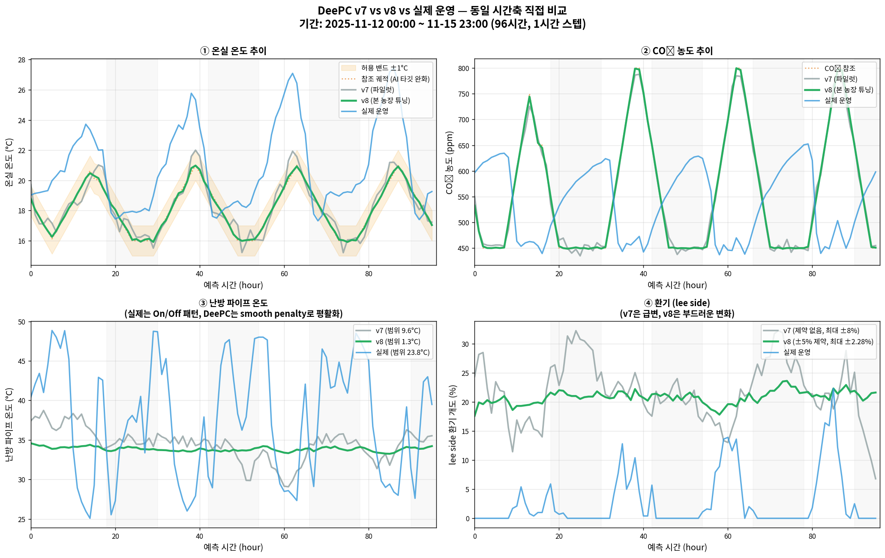
3중 스크린 제어 패턴
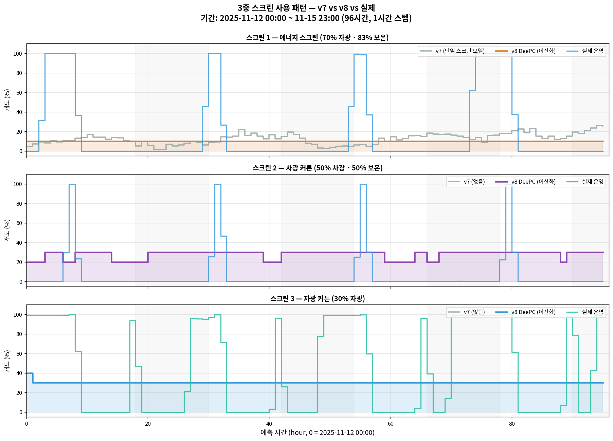
DeePC 근본 한계
Hankel matrix 는 과거 궤적의 선형 조합으로 미래를 예측하는 특성상, "평균치 근처에서 최적 해를 찾는 경향"이 있음 실제 농부의 새벽↑ 낮↓ 스크린 리듬이나 난방 on/off 스윙 같은 시간 의존적 패턴은 재현 불가
① Hankel matrix 구조
Hankel matrix 는 과거 창(window) 을 슬라이딩 해서 만든 행렬
· 과거 데이터의 "조각들" 을 모아둔 거대한 데이터베이스
② 미래 예측 = 과거 조각들의 가중 평균
· 결과적으로 극단값들이 서로 상쇄되어 "평균치" 로 수렴
· 수학적으로는 "편차가 가장 작은 해" → 이게 최적화 목표
③ 실제 농부는 극단을 오가는 전략을 씀
· 새벽 100% ↔ 낮 0%, 난방 ON 70°C ↔ OFF 30°C
· DeePC 는 이 극단을 평균 50% 근처로 뭉갬
· "수학적 최적" vs "실무 최적" 의 괴리
| v8 성공 ✅ | v8 실패 ❌ |
|---|---|
| 밴드 준수율 100% | 스크린 시간 패턴 학습 불가 |
| 환기 급변 2.28% (목표 달성) | 난방 On/Off 스윙 재현 불가 |
| 광합성 +4.7% 개선 | 15분 해상도 미달 (실측 1시간) |
| 3중 스크린 구조 반영 | 에너지 비용 미반영 |
| — | 목표 수확량 역산 미구현 |
실제 재배사는 "수확량 극대화" 가 아니라 "수익 극대화" 관점으로 운영함 예) DeePC 는 "CO₂ 600 ppm 주입" 을 추천하지만, 재배사는 "수확량 +10 kg (20만 원 증가) vs CO₂ 비용 (30만 원)" 계산하여 주입 포기 현재 DeePC 는 이 에너지·비용 제약 이 반영되지 않아 이론적 최적해만 제시 Phase 2 에서 에너지·매출·비용 함수 를 목적 함수에 추가 예정
Phase 2 개선 방향
- 목표 수확량 역산 구현: 재배사 입력 "주당 0.7 kg/m²" → 최적 환경 자동 계산
- 에너지·비용 목적 함수 추가: 수확량 vs 난방·CO₂·전력 비용 최적화
- MIQP (Mixed-Integer Quadratic Programming): 이산 제어 확장으로 스크린 on/off 패턴 학습 가능
- Learning-based DeePC: 신경망 기반 Hankel matrix 학습으로 시간 의존성 포착
- 15분 해상도: 원본 5분 데이터 재처리로 실제 제어 주기 맞춤
- 실제 적용: PRIVA API 연결로 처방 → 실제 반응 데이터 수집
통합 검증
4개 모델을 하나의 예측 체계로 통합하여 전 작기 단위로 검증. 남은 오차의 구조를 5가지 원인으로 분해하고 각 해결 경로 제시.
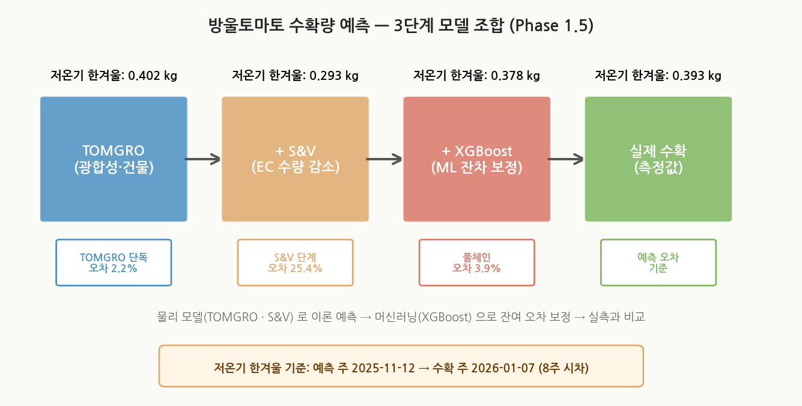
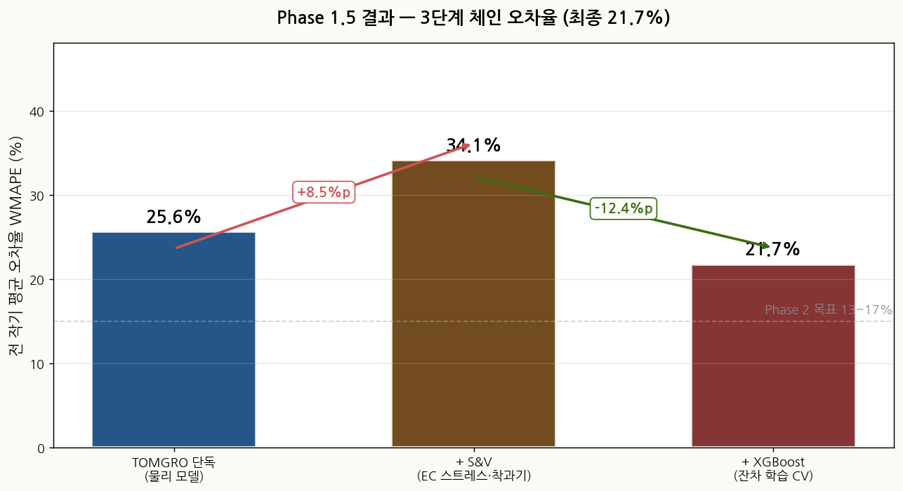
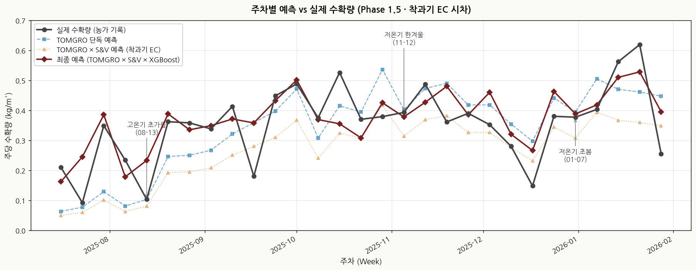
📊 색상 구분 — 초록: 실제 수확량 (농가 기록) · 파랑: TOMGRO 단독 예측 · 갈색: TOMGRO×S&V 예측 · 빨강: TOMGRO×S&V×XGBoost 최종 예측
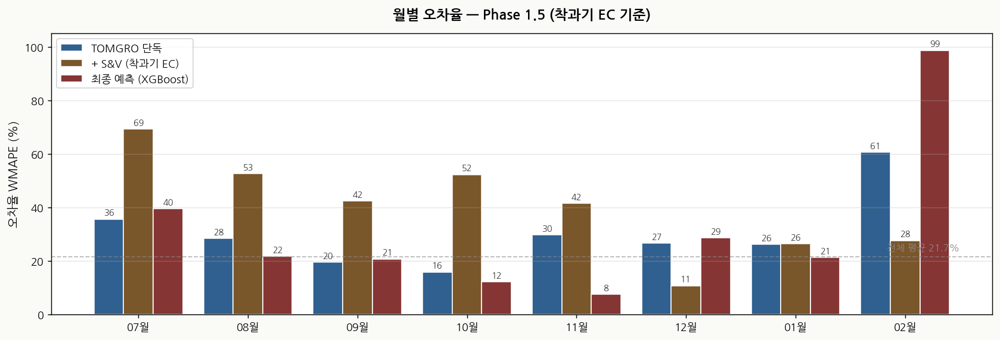
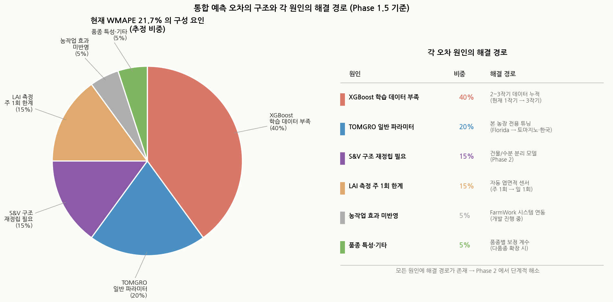
농작업 영향 모델링
FarmWork 시스템 도입 대비 이론 + 간접 분석 + Phase 2 로드맵. 본 작기 실측 농작업 기록은 없으나, 생육 데이터로 간접 분석 수행.
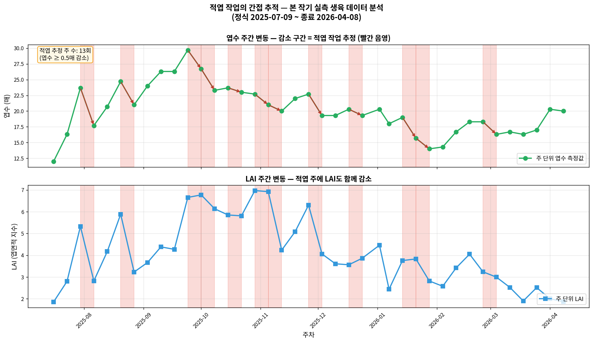
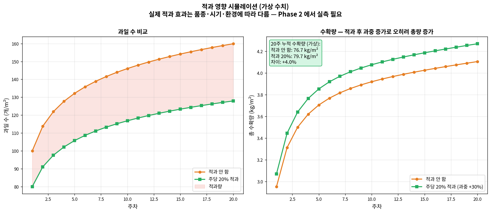
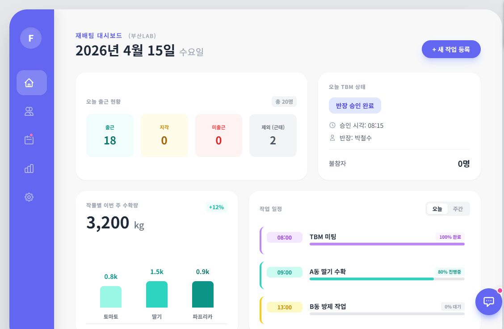
| 데이터 경로 | 수집 방식 | AI 모델 연동 |
|---|---|---|
| 출근 현황 | 자동 (앱 로그인) | XGBoost 특성 추가 |
| 작업 일정·진행률 | 반장 입력 | TOMGRO LAI 보정 |
| 작물별 수확량 | 자동 집계 | 예측 검증 |
| 작업 유형·시간 | 시간표 등록 | 작업 강도 환산 |
| TBM 상태 | 반장 승인 | 일별 가동 지표 |
Phase 로드맵
오차 원인 해결에 따른 구조적 오차율 감소 예상. Phase 2 목표는 섹션 02 에서 파악한 오차 원인 해결에 기반한 계산된 예상이며, 희망적 추정이 아님.
· Phase 1.5 결과 21.7% 달성
· 오차 원인 5가지 파악
· FarmWork 연동
· 2작기 데이터 누적
· 다작기 학습
· DeePC MIQP 확장
일반적 상용 오차율 수준
| 우선순위 | 작업 | 대응 오차 원인 | 기대 감소 | 담당 모델 |
|---|---|---|---|---|
| 🔴 1 | 내부 광량 (calc radiation) 적용 | 광량 입력 부정확 (신규 발견) | −30~50%p 잠재 | TOMGRO |
| 🟠 2 | 휴대용 PAR 센서 구매·측정 | 내부 광량 센서 대표성 검증 | −15~20%p 잠재 | TOMGRO |
| 🟠 3 | 엽면적 측정기 구매·SHAPE 실측 | LAI 계산 정확도 (SHAPE 0.5 검증) | −5~10%p 잠재 | TOMGRO |
| 🟡 4 ✅ | S&V 반영 시차 8주 → 1~2주 조정 → Phase 1 에서 반영 완료 | EC 영향 시점 재검토 (재배사 지적) | −1.6%p 달성 | S&V |
| 🟡 5 | FarmWork 시스템 연동 (적엽 장 수 기록) | 농작업 미반영 (15%) | −10~15%p | TOMGRO · XGBoost |
| 🟡 6 | DeePC 에 목표 수확량 역산 로직 구현 | 재배사↔DeePC 연결 흐름 미구현 | 흐름 완성 | DeePC · TOMGRO |
| 🟡 7 | DeePC 에너지·비용 목적 함수 추가 | 에너지 비용 미반영 (재배사 지적) | 실무 적용성 | DeePC |
| 🟢 8 | TOMGRO 본 농장 파라미터 튜닝 | 일반 파라미터 한계 (20%) | −5%p 이상 | TOMGRO |
| 🟢 9 | 2작기 데이터 누적 + XGBoost 재학습 | 학습 데이터 부족 (40%) | 가장 큰 개선 예상 | XGBoost |
| 🟢 10 | DeePC MIQP 이산 최적화 확장 | 시간 패턴 학습 불가 | 제어 정확도 | DeePC |
🔴 내부 광량 적용 만으로도 TOMGRO 오차율 86% → 36% 로 대폭 감소 확인 (사전 실험 기준) 🟠 PAR 센서·엽면적 측정기 구매로 측정 정확도 확보 🟡 S&V 시차 조정·FarmWork 연동으로 추가 개선 🟢 2작기 데이터 누적으로 XGBoost 안정화 단순 희망이 아닌 구조적으로 계산된 예상
· 휴대용 PAR 센서: 캐노피 상단 24시간 측정용 (약 50~100만 원) · 엽면적 측정기 (Leaf Area Meter): 실측 기반 SHAPE 계수 도출 (약 300~500만 원) · FarmWork 앱 기능 확장: 적엽 장 수 기록 등 (자체 개발)